custtymize is a prompt designer and a prompt engine in one binary. Toggle modules, pick colours, shapes and presets, and watch the prompt render as you type. Then custtymize runs it in your shell, up to 17× faster than starship on the same config. Starship's config format, no starship required.
$ cargo install --git https://github.com/mikemich/custtymize
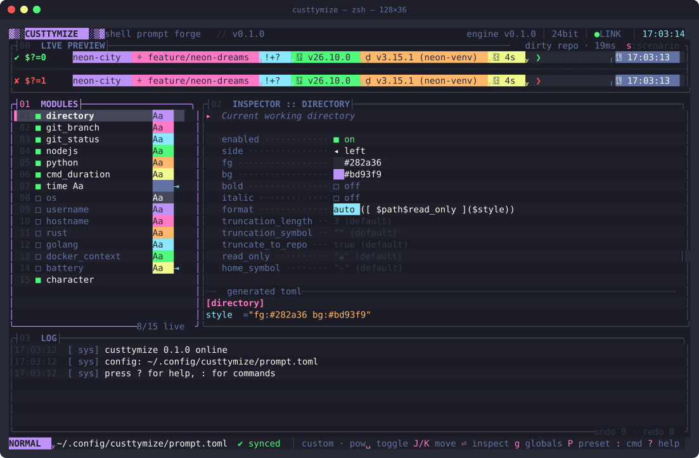
presets × shapes
Every prompt below came out of custtymize. Press P to cycle palettes and S to cycle shapes; the preview redraws as fast as you can press.
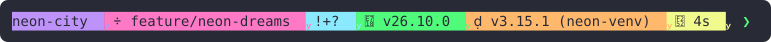
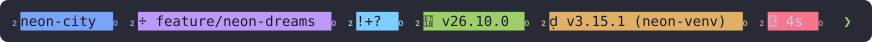
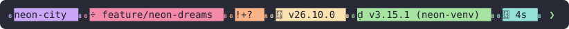
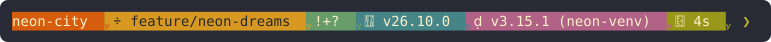
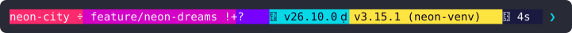
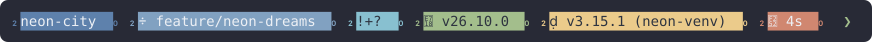
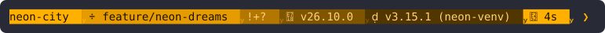
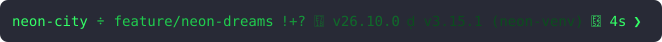
speed
Modules run in parallel, the branch comes straight from .git/HEAD, git status is one call, and tool versions are cached between prompts. The cache is keyed on the binary and your .nvmrc / .python-version / rust-toolchain.toml, so it stays accurate when you upgrade a tool or switch projects.
~141 ms8 msMedian of 30 runs on an Apple Silicon Mac, measured as zsh calls each tool. Run custtymize timings to see your own numbers.
live preview
The editor's preview calls the engine your shell runs on every Enter, inside a throwaway sandbox repo. What you design is exactly what you get.
eval "$(custtymize init zsh)", plus bash and fish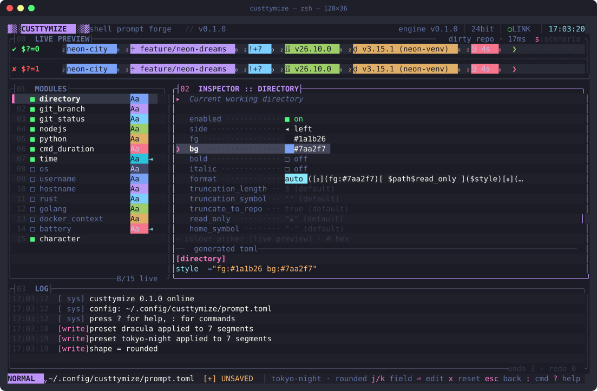
inspector
Select a module and every field is right there: foreground, background, bold, symbol, format, and the module's own options.
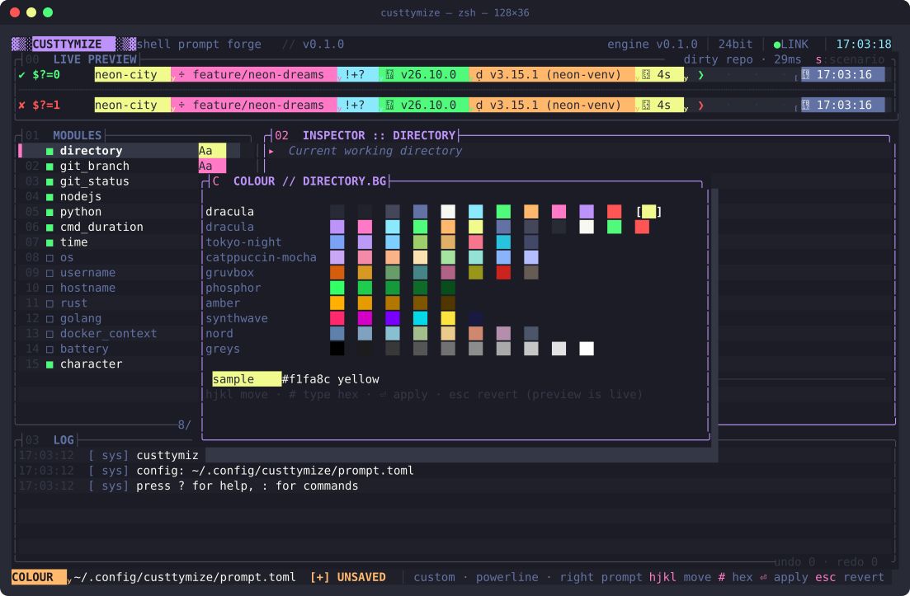
review before install
ctrl-s doesn't write. It opens a review: your current prompt and the new one, side by side, plus a line diff of the TOML.
prompt.toml.bak-<timestamp> first, every time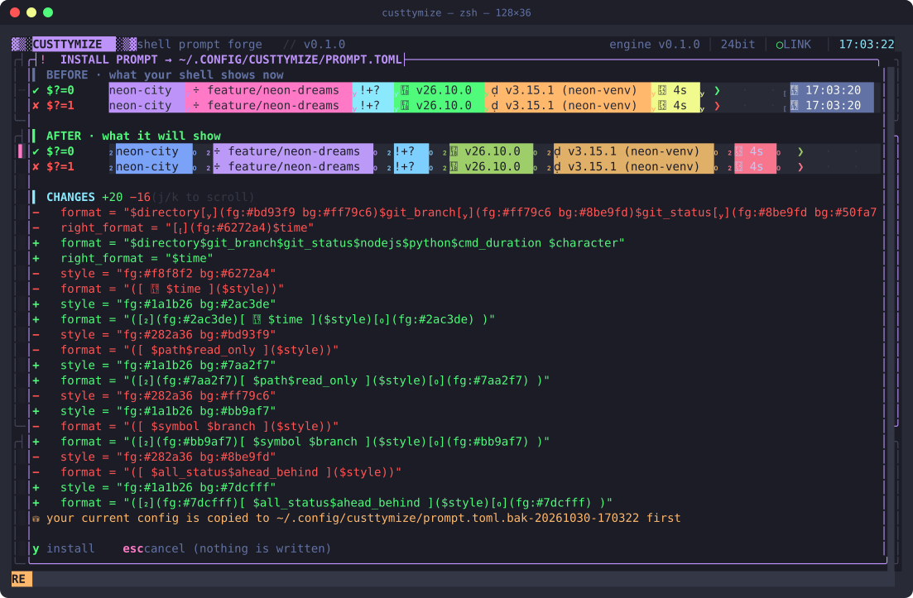
backups
Press B to browse every *.bak* next to your config, including the ones you made by hand, with a live render of each.
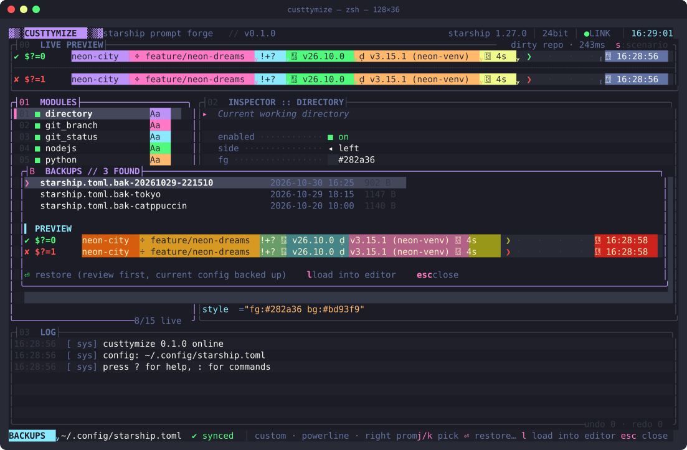
and all kinds of other stuff
Edits go through toml_edit. Comments, key order, unknown modules and literal text survive, and a no-op save is byte-identical.
u and ctrl-r, across every change, including presets and shape swaps.
:w, :preset, :set git_branch.bg #ff79c6, :add kubernetes, with tab completion and history.
One line, two lines or a right prompt. Gradient ░▒▓ or rounded caps. Your prompt character in success and error colours.
--dry-run --preset nord --shape rounded prints the TOML; custtymize timings shows each module's cost.
Branch names are shown literally. A branch called $(rm -rf ~) is just text, in zsh and bash.
Same format language and defaults, checked character by character against starship. Bring your starship.toml; take it back any time.
Truecolour is detected (including Apple Terminal on macOS 26), with a clean xterm-256 downsample everywhere else.
Writes go to a temp file and are renamed into place, through the link if your config lives in a dotfiles repo.
A 600 ms BIOS-style boot (any key skips), CRT scanlines, a typewriter log, and something behind M.
keybindings
install
You need Rust and a Nerd Font in your terminal for the powerline, rounded and slanted glyphs. No starship.
# install $ cargo install --git https://github.com/mikemich/custtymize # design: starts from your starship.toml if you have one; nothing is written until you press y $ custtymize # run it: add to ~/.zshrc (bash and fish work too) $ eval "$(custtymize init zsh)"